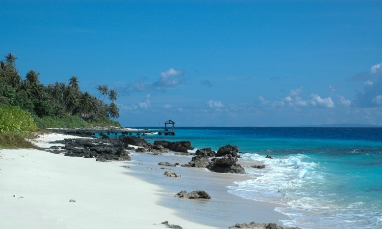

Sejarah
Tidak diketahui persis ketika orang pertama kali datang ke Nias. Tetapi diketahui bahwa ada satu atau beberapa suku lain yang menghuni Nias sebelum kelompok etnis yang ada saat ini (Ono Niha) menetap di pulau sekitar 700 tahun yang lalu. Ini disebutkan dalam tradisi lisan dan didukung oleh bukti-bukti arkeologi.
Pada bulan Agustus 1999 ekskavasi pertama dimulai oleh Museum Pusaka Nias yang bekerjasama dengan Universitas Airlangga di Gua Tögi Ndrawa (Gua Orang Asing), sebuah gua besar yang berjarak 4 km dari Gunungsitoli dan 130 m di atas permukaan laut. Sisa-sisa dan alat-alat yang ditemukan, menunjukkan bahwa itu dihuni lebih dari 12.000 tahun yang lalu. Ekskavasi berikutnya oleh Balai Arkeologi Medan (Lihat: Ketut Wiradnyana dkk. 2002. Gua Tögi Ndrawa, Hunian Mesolitik di Pulau Nias) menyimpulkan bahwa gua itu berpenghuni oleh manusia sampai 700 tahun yang lalu..
Pulau Nias berada dekat salah satu jalan lintas utama Asia Tenggara dan memiliki sejarah panjang berinteraksi dan perdagangan dengan budaya lain. Dalam tulisan awal Cina, Yunani dan Arab, Sumatera dan daerah sekitarnya terkenal. Seawal tahun 150 M, Ptolemy penulis Yunani menyebutkan lima pulau di sebelah barat Sumatera. Mereka dinamakan sebagai "Pulau-pulau Barus" dan Nias adalah pulau yang terbesar. (Kapur barus adalah zat padat berupa lilin yang ditemukan dalam pohon laurel kamper di Sumatera). Dari abad ke-7 dan seterusnya pulau-pulau barat Sumatera dikenal baik oleh pedagang dan pelaut Cina dan Arab. Orang Nias menjual hasil mereka kepada kapal yang melewati sebagai pertukaran ke logam dan tekstil.

Penulisan pertama tentang Nias berasal dari Sulayman, seorang pedagang Persia, yang pada tahun 851 M mengunjungi Pulau Nias. Dia melihat bahwa para bangsawan lokal mengenakan banyak perhiasan emas yang indah dan memiliki kegemaran untuk pengayauan. Seorang pemuda yang ingin menikah, harus terlebih dahulu memenggal seorang musuh. Juga dicatat bahwa Pulau Nias memiliki struktur sosial yang kompleks. Pada tahun 1154, Edrisi menulis: "Pulau ini dihuni oleh sejumlah besar suku-suku." Tradisi lisan Nias menyebutkan enam suku yang berbeda dari masa ini, dan yang salah satunya adalah suku Bela, yang keturunannya tinggal di pohon-pohon.
Gelombang imigrasi membawa suku 'Ono Niha' ke Nias sekitar tahun 1350 M. Sebagian besar orang Nias saat ini adalah keturunan dari kelompok etnis ini. Diyakini bahwa mereka tiba melalui Singkuang, sebuah pelabuhan di Sumatera yang menghadapi Pulau Nias. Pemukiman pertama didirikan di Sifalagö Gomo di Nias Selatan. Orang-orang Ono Niha memiliki pengetahuan unggul untuk teknik bangunan dan penggunaan dan pembuatan alat besi. Secara cepat mereka menjadi kelompok yang berpengaruh di daerah ini. Dari Gomo mereka tersebar ke seluruh pulau sampai semua orang Nias menyebut diri mereka sebagai Ono Niha. Seiring dengan permulaan dan masuknya imigran “Niha”, maka berakhir pula penghunian gua Tögi Ndrawa. Tidak diketahui kalau suku tua yang lain di Nias menjadi punah atau berasimilasi dengan Ono Niha.
Tidak jelas dari mana suku Ono Niha berasal. Tapi banyak dari kedatangan pertama di Nias memiliki nama seperti Hia atau Ho, yang juga merupakan nama umum di Cina. Penelitian DNA menemukan, bahwa keturunan mereka ini (”niha“ atau suku ”manusia“) yang sekarang disebut “Ono Niha” (orang Nias) paling dekat dengan Taiwan dan Filipina.
Penjajahan Belanda di Nias
Selama puluhan tahun Belanda hanya menguasai ”Rapatgebied,“ wilayah kecil di sekitar kota Gunungsitoli. Meninggalkan daerah ini untuk orang Eropa sangat berbahaya karena sering peperangan antar suku dan pihak pengayau. Pada tahun 1840 Belanda memutuskan untuk mencoba mengambil kendali seluruh pulau. Sejumlah pangkalan didirikan di sekitar pulau untuk peningkatan perdagangan serta kontrol militer di seluruh Nias. Namun kontrol itu terbatas pada benteng pertahanan dan daerah sekitar mereka. Pertempuran sporadis dan perang terus selama beberapa dekade, terutama di selatan. Di selatan juga adalah tempat tinggal beberapa kepala suku yang paling ganas dan paling kuat. Pertempuran besar dengan ribuan prajurit yang bertempur di bukit di belakang Lagundri. Desa Orahili terutama ganas, dan mereka melawan Belanda selama beberapa dekade. Kadang-kadang, benteng pertahanan dan pos perdagangan ditinggalkan saat mereka menjadi terlalu berbahaya dan mahal untuk dijaga. Orang Belanda sering membakar desa-desa sebagai pembalasan atas serangan yang dilakukan.
Pada tahun 1900 Belanda mengirim kontingen pasukan besar ke Nias untuk mengamankan wilayah luar dari Gunungsitoli. Kontrol penuh untuk seluruh pulau hanya ditetapkan pada tahun 1914. Salah satu daerah terakhir yang 'ditenangkan' oleh Belanda di seluruh Indonesia.
Salah satu dampak abadi kolonialisme Belanda adalah pembubaran struktur tradisional desa. Secara tradisional, desa-desa Nias dibangun di puncak-puncak bukit untuk tujuan pertahanan. Penjajah Belanda lalu membangun jaringan jalan di pulau dan memutuskan bahwa masyarakat setempat harus hidup di samping jalan tersebut. Ini memiliki dua tujuan: barang dari daerah-daerah terpencil bisa secara efektif diangkut kembali ke ibukota Gunungsitoli dan tentara Belanda bisa mudah menjangkau desa-desa kalau ada pemberontakan.
Budaya
Dibandingkan dengan pulau-pulau tetangga lain di Sumatera, budaya Pulau Nias telah mengembangkan dengan jelas tradisi dan adat istiadat unik. Beberapa tradisi ini berhubungan dengan pemujaan leluhur sebelum kekristenan dan sebagian besar ini telah lenyap. Adat-adat lainnya seperti perbudakan dan pengayauan juga telah dihapuskan ketika Pulau Nias bergabung dengan dunia modern. Tetapi banyak adat istiadat Nias masih dipraktekkan, seperti lompat batu, upacara pernikahan dan terutama sekali, tarian tradisional dan musik.
Lompat batu (Hombo Batu) adalah praktek budaya Nias yang unik. Ini juga terkenal oleh orang Indonesia karena, upacara lompat batu Nias digambarkan pada uang lama seribu rupiah. Awalnya upacara lompat batu adalah sebagian dari ritual inisiasi pria muda untuk diterima sebagai orang dewasa dan prajurit. Ketinggian piramida batu lompat itu adalah di antara 1,8 meter sampai 2,2 meter. Lompat ini dilakukan tanpa alas kaki dan latihan berulang-ulang diperlukan sebelum mencoba lompat ini. Keterampilan untuk melompat benda yang tinggi dikembangkan sebagai teknik pertempuran. Dalam serangan mendadak, prajurit bisa melompati tembok pertahanan di desa musuh. Banyak desa di selatan masih memiliki susunan batu untuk upacara ini.
Upacara Harimau (Famatö Harimao)
Pada zaman dulu di wilayah Maenamölö, Nias Selatan ada sebuah upacara di mana patung harimau diusung dan diarak keliling. Karena tidak ada harimau di Nias, patung itu (Adu Harimao) tampak lebih seperti anjing berkepala kucing. Upacara sakral ini digelar sekali setiap tujuh atau empat belas tahun. Usungan patung harimau itu kemudian dipatahkan dan patung harimau dibuang di sungai. Upacara tersebut dinamakan ‘Famatö Harimao’. Masyarakat lokal percaya bahwa semua dosa yang mereka lakukan selama tahun-tahun sebelumnya akan hanyut bersama dengan patung. Karena sebagian besar dari Orang Nias menjadi Kristen, upacara Famatö Harimao tidak lagi dirayakan. Dalam upaya untuk melestarikan dan merevitalisasi budaya lokal, upacara perarakan ini kadang-kadang dilakukan di Nias Selatan di acara-acara tertentu. Hari ini, upacara telah berubah nama menjadi 'Famadaya Harimao' (perarakan patung harimau).
Orang Nias tidak punya kerbau atau lembu. Mereka juga tak punya sapi. Binatang peliharaan yang paling penting ialah babi. Pada segala peristiwa dibutuhkan babi, segala pesta adat, setiap perkara dan perdamaian, pesta hukum [fondrakö], setiap tahap dalam pembangunan satu rumah adat, setiap peristiwa pribadi dalam suatu keluarga, kelahiran anak dan pemberian nama, berbagai jenis persembahan, u.p. sebelum pergi memburu, pada penyakit dan kalau imam berdoa, lagi pada kematian seseorang, juga dalam peristiwa mengayau. Tak ada sesuatu pun yang dapat diselesaikan dan disyahkan tanpa menyembelih babi. Tiada peristiwa dan pesta tanpa babi.
Pakaian tradisional selalu menggunakan kombinasi dari tiga warna yaitu:
- -Merah:mewakili keberanian dan keganasan pendekar Nias, serta marga mereka dan keluarga.
- -kuning:mewakili kekayaan, kemuliaan dan kesuksesan.
- -hitam:mewakili tanah air mereka dan tanah yang subur di Nias, serta ketabahan dari orang-orang biasa.
Perempuan dari selatan memakai pakaian yang didominasi warna kuning, sementara perempuan di utara memakai pakaian yang didominasi warna merah. Pakaian tradisional juga menggabungkan pola dan lambang desain tertentu. Yang paling biasa digunakan adalah deretan corak segitiga, yang disebut 'Ni'ohulayo'. Bentuk segitiga menyerupai kiat tombak dan pola ini melambangkan semangat kepahlawanan dari Orang Nias. Pola ini tidak hanya digunakan dalam pakaian tradisional, namun saat ini sering dikaitkan dengan budaya atau apapun yang mewakili Nias. Ada sejumlah lambang dan pola ikonik dalam budaya Nias yang dapat dilihat pada pakaian tradisional, karya batu dan ukiran kayu di rumah-rumah tradisional.
Secara tradisional laki-laki dan perempuan memakai banyak perhiasan terutamanya bangsawan. Akun sejarah tertulis pertama dari Nias menyebutkan bahwa masyarakat setempat memakai banyak perhiasan emas.Hiasan yang paling penting bagi pria adalah kalung yang terbuat dari tempurung kelapa atau tempurung kura-kura, yang disebut 'Kalabubu'. Ini hanya bisa dipakai oleh pendekar yang telah membuktikan diri dalam pertempuran. Bangsawan dan kepala suku memakai hiasan kepala yang besar. Pria memakai anting-anting hanya di telinga kanan. Di bagian utara, anting-anting ini besar sekali dan hampir sebesar kepala pria. Sebuah penghiasan yang sangat unik di Nias adalah kumis logam yang dipakai oleh pendekar.
Wanita memakai perhiasan emas, kuningan, tembaga, kerang dan manik-manik. Seringkali anting-anting dan gelang berukuran besar sekali. Terutama kalau dibandingkan dengan yang dipakai saat ini, seperti anting Saru Dalinga. Versi yang lebih kecil dari desain yang sama adalah yang dipakai hari ini, terutama di pesta pernikahan. Penghiasan wanita memiliki perbedaan dari daerah ke daerah. Karena itu, dari melihat foto-foto sejarah bisa dikatakan di mana foto tersebut diambil dari melihat perhiasan perempuan.
Pada pesta-pesta dan upacara, tempat untuk acara ini sering dihiasi dengan anyaman daun-daun janur. Dengan menyambungkan anyaman daun janur ini, Orang Nias membuat bentuk dan pola yang indah . Ini disebut Ni'okindrö (anyaman daun janur). Gaya Ni'okindrö bervariasi antara daerah ke daerah. Bentuk yang dibuat oleh daun janur memiliki banyak arti yang berbeda. Hari ini ketika kunjungan tamu penting ke Nias, mereka sering disajikan dengan kalung yang dibuat menggunakan teknik ini. Kalung ini dikenal sebagai Nifatali Bulumio. Hanya beberapa orang yang mampu membuat kalung seperti ini. Di tahun 2016 pada waktu kunjungan Presiden Jokowi ke Nias, beliau dipersembahkan dengan Nifatali Bulumio yang dibuat oleh karyawan museum.
Wisata
Wisata di Kepulauan Nias - Sumatera Utara tak hanya identik dengan keindahan Danau Toba. Salah satu daerah yang tak boleh dilewatkan adalah Kepulauan Nias. Semenjak baru terbentuk di tahun 2009 hingga sekarang, usaha pemekaran Kabupaten Nias dalam sektor pariwisata telah melahirkan banyak destinasi wisata di kepulauan Nias yang sangat menarik untuk dikunjungi.
Tak hanya panorama alam yang indah, Kabupaten Nias punya tradisi dan kebudayaan yang unik. Buat kamu yang tertarik menjelajahi ragam tempat wisata di Kepulauan Nias, intip rekomendasi destinasi wisata populer di Kepulauan Nias berikut:
1. Pulau Asu

Jangan salah fokus ya dengan penyebutan nama pulau ini. Asu diambil dari kependekan kalimat asuh yang bermakna terakhir dalam bahasa Nias. Untuk bisa sampai di pulau ini memng memrlukan waktu pejalanan yang cukup lama. Lokasi pulau Asu sendiri terletak di sebelah barat kabupaten Nias dan berbatasan langsung dengan samudra Hindia.
Pemandangan di Pulau Asu sudah tidak peru diragukan lagi. Air laut sejauh mata memandang sangat jernih, ditabah lagi butiran pasir putih yang mebuat mata tampak betah memandang lukisan dari sang pencipta ini.
Lokasi: Bawosaloo, Kec. Sirombu, Kab. Nias Barat.
2. Pantai Tureloto
Kalau pantai yang satu ini terletak di Desa Tureloto, Balefadoro, Tuho, Lahewa Kabupaten Nias Utara. Jika ingin melihat pantai dengan pemandangan air yang tenang dan jernih sehingga bisa untuk mandi atau sekedar bermain air, pantai Indah Tureloto adalah pilihan yang tepat. Pantai ini memiliki air jernih di bibir pantainya, Anda bisa melihat kedalaman air bahkan dengan mata telanjang saja.
Lokasi: Balefadoro Tuho, Kec. Lahewa, Kab. Nias Utara.
3. Pantai Karang Falaete
Pantai satu ini terletak di Desa Lahusa, Kecamatan Sirombu, Nias Barat. Terdapat susunan batu- batuan besar terjejer rapi di sepanjang bibir pantai, struktur batu karang seolah membuat pemandangan pantai satu ini sayang sekali untuk di lewatkan. Naiklah ke salah satu batu karang besar, Anda akan melihat pemandangan alam yang luar biasa indah. Samudra Hindia siap mempesona mata anda. Saat sunset adalah momen terbaik yang bisa Anda dapatkan disini
Ombak di pantai Karang Falaete merupakan ombak yang bagus bagi Anda yang ingin berselancar. Menjajal gulungan ombak yang tak terputus di sini akan memacu adrenalin Anda pecinta selancar sejati.
Lokasi: Lahusa, Kec. Sirombu, Kab. Nias Barat.
4. Desa Adat Bawamataluo
Melipir sejenak ke Desa Adat yanf menjadi daya tarik utama pariwisata masyarakat Nias. Desa ini terleta di Kecamatan Fanayama, Kabupaten Nias Selatan, saat ini Desa Bawomataluo sudah menjadi ikon wisata pulau Nias. Di desa ini Anda bisa mendapatkan wisata budaya asli Indonesia seperti Tari Fataele atau yang sering disebut dengan tarian perang.
Tentunya tidak ketinggalan pertunjukan Homo Batu. Pertunjukan ini sudah merupakan bagian dari Desa Bawomaluo dan telah dilakukan selama beberapa generasi penerus. Tes lompat batu ini adalah untuk menentukan tingkat kematangan seorag lelaki asli Nias.
Lokasi: Bawomataluo, Kec. Fanayama, Kab. Nias Selatan.
5. Air Terjun Humogo
Siapa yang tidak suka dengan wisata air terjun? Pasti hampir semua orang tidak bisa menolak wisata satu ini. Di Nias sendiri ada salah satu air terjun yang siap menyuguhkan panorama menarik untuk anda. Air Terjun Humogo terletak di Jalan Tola Maera, desa Fadoro. Air terjun ini memiliki air yang sangat jernih dan menyegarkan, sayang sekali jika kita melewatkan kesempatan untuk mandi di bawah deras air terjun.
Air terjun ini memang tidak terlalu tinggi, curah airnya pun juga tidak terlalu deras, cocok untuk tempat bermain air sambil bersenda gurau bersama teman ataupun keluarga.
Lokasi: Fadoro, Kec. Gunungsitoli Idanoi, Kota Gunungsitoli.
6. Air Terjun Mondrowe
Nah masih seputar air terjun yang ada di Nias. Air Terjun Mondrowe memiliki bukit yang penuh dngan batu karang. Anda bisa melompat dari ketinggian untuk menceburkan diri dalam kolam yang berada di bawah air terjun. Curah air di air terjun juga tidak terlalu deras, pas sekali jika dijadikan tempat bermain dan bersenda gurau melepas lelah.
Air terjun ini berada di Desa Mondrowe, Nias Selatan. Jikaingin ke sini jangan lupa untuk datang di saat curah air tidak kering alias musim kemarau. Sayang sekali jika kesini dalam keadaan air terjun sedang kering.
Lokasi: Mondrowe, Kec. Lahusa, Kab. Nias Selatan.
7. Pantai Sifahandro
Mendengar namanya yang unik pasti sudah membuat Anda semakin penasaran dengan wisata alam satu ini. Wisata alam seperti pantai bagi beberapa orang memang tidak pernah membosankan. Pantai Sifahandro atau pantai berbisik salah satunya. Ciri khas dari pantai ini adalah setiap Anda berjalan akan terdengar suara angin yang sama-samar seolah seperti berbisik.
Lokasi: Sifahandro, Kec. Sawo, Kab. Nias Utara.
8. Desa Wisata Orahili
Istirahat sejenak di wisata pantai, Anda bisa mencoba berkunjung ke wisata budaya Desa Orahili. Desa ini merupakan desa tertua di Indonesia loh, bisa dilihat dari banyaknya peninggalan pada zaman megaitikum yang ada di desa Orahili.
Peninggalan-peninggalan tersebut berupa patung, tembaga, dan masih banyak lagi. Jadi jangan kaget ketika sampai di desa ini dan Anda di sambut patung-patung yang berdiri tegak.
Lokasi: Orahili, Kec. Bawolato, Kab. Nias.